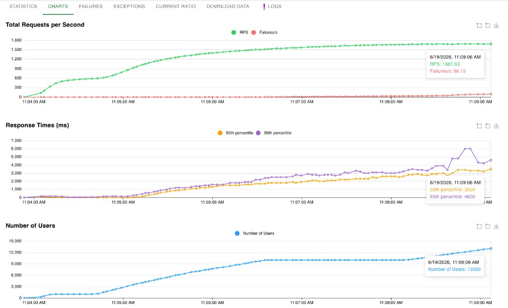
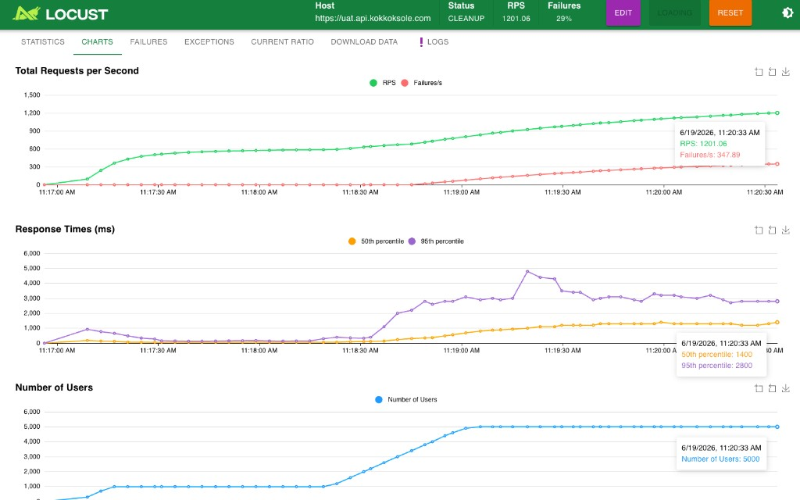

Validate API performance and stability under concurrent load for the lottery sell workflow — before production rollout and peak draw periods.
Run Locust from two locations against two API targets. Locust is the load generator — the targets are what we stress-test.
Local Machine — developer PC
Server — Server VM
Public UAT —
https://uat.api.kokkoksole.com
Private Internal —
http://172.20.10.69:8811
Public
UATuat.api.kokkoksole.com |
Private
Internal172.20.10.69:8811 |
|
|---|---|---|
| Local MachineRun Locust on developer PC | Via public gateway | Via internal network |
| ServerRun Locust on dedicated server | Via public gateway | Via internal network |
Load tests executed using Locust sell workflow (4 steps). Results captured at peak load.

System handled up to ~10,000 users with stable response times. Beyond 10,000 users, latency increased sharply (P50 → 3.5s) and failures appeared (~96/s at peak, ~5.7% of RPS).

Up to 1,000 users (~600 RPS) performed well with low latency and zero failures. Beyond 1,000 users, failures climbed to 29% with P95 reaching 2.8s (spike to ~5s). Errors observed: HTTP 503 (Service Unavailable) and 524 (Gateway Timeout).
| Metric | Private Internal | Public UAT |
|---|---|---|
| Peak concurrent users | 13,000 | 5,000 |
| Peak RPS | 1,682 | 1,201 |
| Stable limit (0% failures) | ~10,000 users | ~1,000 users |
| P95 at peak load | 4,600 ms | 2,800 ms |
| Failure rate at peak | ~5.7% | 29% |